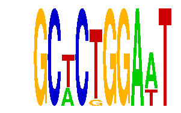

family_2 |
|---|
|  |
| Download PWM |
| Download instances (motifs) |
| Show motif distribution |
Query_ID | Query_Consensus | Subject_Name | Source_DB | Subject_ID | Length | Orientation | Offset | Divergence | Overlap | Subject_Consensus |
|---|
Sequence | Start_position (from start) | Start_position (from end) | Average conservation | Best conservation score | Instance_with_best_CS | Best_Z-score | Instance_with_best_ZS | Strand |
|---|---|---|---|---|---|---|---|---|
| chr1:43201300-43203046 | 702 | 712 | 0.0041 | 0.023 | GCWCTGGAWT | 12.722019 | GCWCKGGAAT | -1 |
| chr11:21460935-21462500 | 1107 | 1117 | 0.0433 | 0.072 | GCWCTGGAWT | 12.722019 | GCTCKGGAWT | -1 |
| chr7:56094100-56096800 | 728 | 738 | 1 | 1 | GCWCTGGAWT | 12.261244 | GCWCTGGAWT | 1 |
| chr6:24495900-24497070 | 1031 | 1041 | 0.0086 | 0.019 | GCWCKGGAAT | 12.261244 | GCWCTGGAWT | 1 |
| chr8:46682700-46684400 | 699 | 709 | 0.0059 | 0.019 | GCTCKGGAWT | 12.261244 | GCWCTGGAWT | 1 |
| chr14:55626500-55627900 | 972 | 982 | 0.0008 | 0.003 | GCTCKGGAWT | 12.261244 | GCWCTGGAWT | -1 |
| chr3:122730300-122731421 | 697 | 707 | 0.0096 | 0.033 | GCWCTGGAWT | 12.261244 | GCWCTGGAWT | -1 |
| chr4:133849659-133851500 | 985 | 995 | 0.0945 | 0.104 | GCWCKGGAAT | 12.722019 | GCWCKGGAAT | 1 |
| chr9:66876700-66878106 | 88 | 98 | 0.0193 | 0.042 | GCWCTGGAWT | 12.722019 | GCWCKGGAAT | 1 |
| chr14:63877471-63879000 | 1020 | 1030 | 0.014 | 0.039 | GCWCTGGAWT | 12.722019 | GCWCKGGAAT | -1 |
| chr11:109541300-109544000 | 216 | 226 | 0.0174 | 0.034 | GCTCKGGAWT | 12.722019 | GCWCKGGAAT | 1 |
| chr2:49926100-49928200 | 538 | 548 | 0.0003 | 0.001 | GCTCKGGAWT | 12.261244 | GCWCTGGAWT | 1 |
| chr7:148085400-148087600 | 1756 | 1766 | 0 | 0 | GCWCTGGAWT | 12.722019 | GCWCKGGAAT | 1 |
| chr18:10850412-10851600 | 497 | 507 | 0.0204 | 0.037 | GCWCTGGAWT | 12.722019 | GCTCKGGAWT | 1 |
| chr17:81945300-81947000 | 393 | 403 | 0.0011 | 0.003 | GCWCTGGAWT | 12.261244 | GCWCTGGAWT | 1 |
| chr2:74808000-74809351 | 134 | 144 | 0.0762 | 0.124 | GCTCKGGAWT | 12.261244 | GCWCTGGAWT | -1 |
| chr8:64399000-64401110 | 741 | 751 | 0.0116 | 0.028 | GCWCTGGAWT | 12.722019 | GCTCKGGAWT | 1 |
| chr13:12476595-12478103 | 678 | 688 | 0.0071 | 0.012 | GCWCKGGAAT | 12.261244 | GCWCTGGAWT | 1 |
| chr18:5073600-5077590 | 3590 | 3600 | 0.0064 | 0.012 | GCWCTGGAWT | 12.722019 | GCWCKGGAAT | 1 |
| chr18:11401797-11404300 | 180 | 190 | 0.0073 | 0.019 | GCWCKGGAAT | 12.261244 | GCWCTGGAWT | 1 |